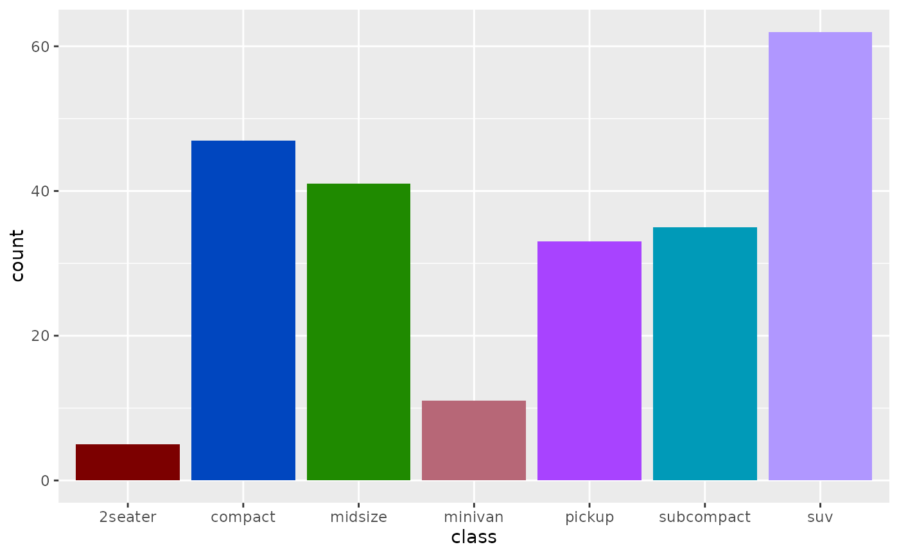

These scales provide perceptually optimized color palettes for ggplot2 visualizations. Colors are generated using minimax optimization in the OKLAB color space to maximize perceptual distinctness.
Usage
scale_color_huerd(
palette = NULL,
brand_colors = NULL,
...,
aesthetics = "colour",
na.value = "grey50"
)
scale_colour_huerd(
palette = NULL,
brand_colors = NULL,
...,
aesthetics = "colour",
na.value = "grey50"
)
scale_fill_huerd(
palette = NULL,
brand_colors = NULL,
...,
aesthetics = "fill",
na.value = "grey50"
)Arguments
- palette
A
huerd_paletteobject (fromgenerate_palette()) to use. IfNULL, a palette will be generated automatically based on the number of levels in your data.- brand_colors
Character vector of hex colors that must be included in the palette. Only used when
palette = NULL. These colors will be preserved and additional colors optimized around them.- ...
Additional arguments passed to
generate_palette()when generating palettes on-the-fly, or toggplot2::discrete_scale().- aesthetics
Character string or vector of aesthetic names to apply the scale to. Defaults to
"colour"forscale_color_huerd()and"fill"forscale_fill_huerd().- na.value
Color to use for missing values. Defaults to
"grey50".
Details
There are two ways to use these scales:
Pre-generated palette: Pass a
huerd_paletteobject to thepaletteargument. This is useful when you want to reuse the same palette across multiple plots or need fine control over generation parameters.On-the-fly generation: Leave
palette = NULLand the scale will automatically generate an optimized palette based on the number of levels in your data. Usebrand_colorsto include specific colors.
See also
generate_palette() for creating palettes with custom parameters.
Examples
if (requireNamespace("ggplot2", quietly = TRUE)) {
library(ggplot2)
# Basic usage - automatic palette generation
ggplot(iris, aes(Sepal.Length, Sepal.Width, color = Species)) +
geom_point(size = 3) +
scale_color_huerd()
# With brand colors
ggplot(iris, aes(Sepal.Length, Sepal.Width, color = Species)) +
geom_point(size = 3) +
scale_color_huerd(brand_colors = c("#1f77b4", "#ff7f0e"))
# Using a pre-generated palette
my_palette <- generate_palette(5, progress = FALSE)
ggplot(mtcars, aes(mpg, wt, color = factor(cyl))) +
geom_point(size = 3) +
scale_color_huerd(palette = my_palette)
# Fill scale for bar charts
ggplot(mpg, aes(class, fill = class)) +
geom_bar() +
scale_fill_huerd() +
theme(legend.position = "none")
}
